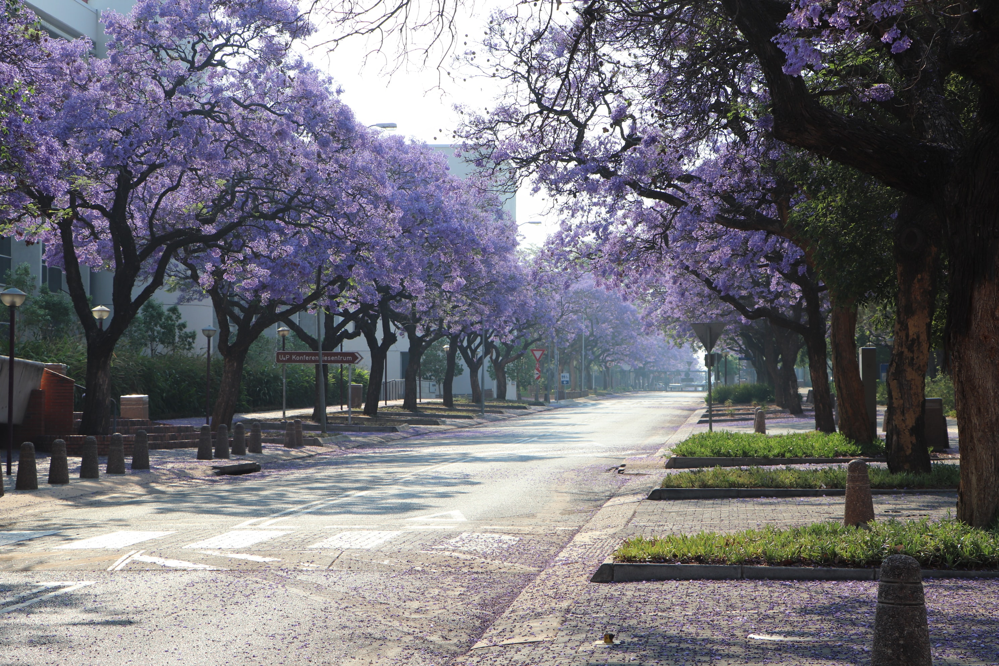

March 1996
I was born in Pretoria, South Africa.

October 1998
Moved with my family from Pretoria to my home city of Cape Town, South Africa.

November 2014
I Matriculated from High School with a Bachelor's pass. I left High School not really knowing what I wanted to do next.
February 2017
I enroll at Cape Peninsula University of Technology to study application development. I leave after my first year due to the unstable academic environment.
This remains one of the most formative years of my university education.
This remains one of the most formative years of my university education.
January 2018
I enroll at Stellenbosch University where I studied for a BCom degree with Information Systems Management and Economics as majors.
I graduate three years later with a combined aggregate of above 70%.
I graduate three years later with a combined aggregate of above 70%.
December 2021
I graduate cum laude from Stellenbosch University after obtaining my BCom Honours degree in Information Systems Management.
I leave university with a reluctant smile - but also filled with excitement for what's to come.
I leave university with a reluctant smile - but also filled with excitement for what's to come.
January 2022
I join PricewaterhouseCoopers Cape Town as a graduate Associate within the Digital Trust team. 🚀
And beyond...